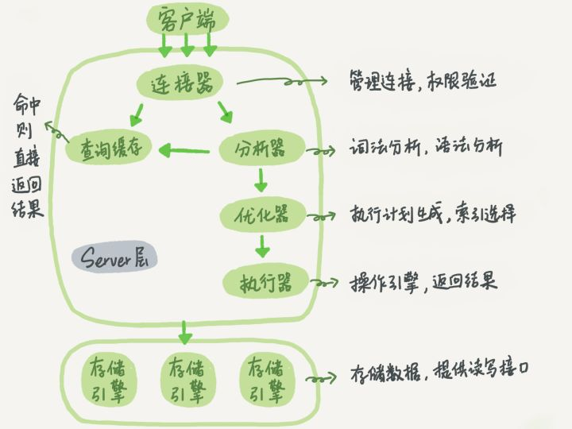
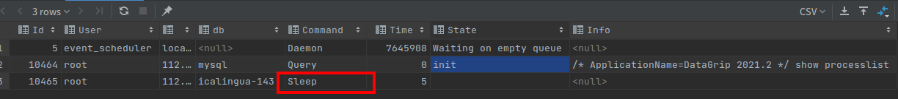
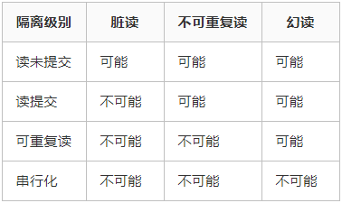

[toc]
Mysql查询过程
参考：https://zhuanlan.zhihu.com/p/254656601
Mysql大体分为Server层和储存引擎层。
- Server层：包括连接器、查询缓存、分析器、优化器、执行器等，覆盖了Mysql的大部分核心服务功能，以及所有的内置函数（日期、时间、数字和加密等）
- 储存引擎层：负责数据的储存和提取。其架构是插件式的，支持Innodb、MyISAM等多个储存引擎。

连接器
负责客户端和数据库建立连接、获取权限、维持和管理连接
|
|
在tcp三次握手之后建立连接。建立连接和认证通过后，连接器会从权限表中查询拥有的权限，此连接的权限都会依赖此权限（修改权限后也不会改变，除非重新启动）
连接完成后，如果没有动作，处于空闲状态

- 长连接：连接成功之后，客户端有请求，则会一直使用这个连接。
- 导致Mysql占用的内存涨的很快。执行过程中产生的临时对象是管理在该连接对象里面的，只有在连接断开的时候才会释放
- 知链接：每一次执行很少的查询后就会断开连接，之后查询则需要重新建立连接
解决办法
- 定期断开长连接。在使用一段时间后或者执行一次占内存较大的查询后会断开连接，之后查询再连接。
- 如果是mysql5.7后的版本，可以通过执行mysql_reset_connection来初始化资源，该过程不会去重新连接和验证权限
查询缓存
拿到一个查询后，先到查询缓存查看之前是否执行过此条语句(key-value形式保存)。如果语句不在缓存中，则继续执行下面的步骤，最后将结果缓存到查询缓存中
一般不建议使用查询缓存，因为对一张表的数据修改会导致这个表的缓存都被清空。除非有一张静态表。
mysql中可以把query_cache_type设置成DEMAND，此时默认的sql就不会执行缓存，需要缓存时需要显示指定：
|
|
MySQL8.0版本中，查询缓存的功能被完全删除了
分析器
首先对sql进行词法分析，识别sql语句中的字符串分别是什么，代表什么。
然后进行语法分析。判断是否满足Mysql语法
优化器
在表中有多个索引的时候，决定用哪个索引；或者在一个语句有多表关联的时候，决定各表的连接顺序。
执行器
首先判断对当前表是否有查询权限
|
|
如果没有索引
- 调用InnoDB引擎接口取这个表的第一行，判断id值是否为10，不是则跳过
- 调用引擎接口取下一行，判断，直到最后一行
- 将上面所有的结果集返回给客户端
在慢查询日志中，你会看见一个rows_examined的字段，该字段会表示语句执行过程中扫描了多少行。这个值是在执行器在扫描每一行的时候累加的。
常见知识
数据库字段
TIMESTAMP和DATETIME
相同点
1> 两者都可用来表示YYYY-MM-DD HH:MM:SS[.fraction]类型的日期。
不同点
1> 两者的存储方式不一样
对于TIMESTAMP，它把客户端插入的时间从当前时区转化为UTC（世界标准时间）进行存储。查询时，将其又转化为客户端当前时区进行返回。
而对于DATETIME，不做任何改变，基本上是原样输入和输出。
2> 两者所能存储的时间范围不一样
timestamp所能存储的时间范围为：'1970-01-01 00:00:01.000000' 到 '2038-01-19 03:14:07.999999'。
datetime所能存储的时间范围为：'1000-01-01 00:00:00.000000' 到 '9999-12-31 23:59:59.999999'。
总结：TIMESTAMP和DATETIME除了存储范围和存储方式不一样，没有太大区别。当然，对于跨时区的业务，TIMESTAMP更为合适。
|
|
mysql时区问题
log_timestamps
log_timestamps参数并不影响时区，只是设置不同会影响某些日志记录的时间。该参数主要是控制 error log、slow log、genera log 日志文件中的显示时间，但不会影响 general log 和 slow log 写到表 (mysql.general_log, mysql.slow_log) 中的显示时间。
log_timestamps 是全局参数，可动态修改，默认使用 UTC 时区，这样会使得日志中记录的时间比北京时间慢 8 个小时，导致查看日志不方便。可以修改为 SYSTEM 变成使用系统时区。
|
|
time_zone
time_zone参数用来设置每个连接会话的时区，该参数分为全局和会话级别，可以动态修改。默认值为 SYSTEM，此时使用的是全局参数 system_time_zone 的值，而 system_time_zone 默认继承自当前系统的时区，即默认情况下 MySQL 时区和系统时区相同。
时区设置主要影响时区敏感的时间值的显示和存储。包括一些函数(如 now()、curtime())显示的值，以及存储在 TIMESTAMP 类型中的值，但不影响 DATE、TIME 和 DATETIME 列中的值，因为这些数据类型在存取时未进行时区转换，而 TIMESTAMP 类型存入数据库的实际是 UTC 的时间，查询显示时会根据具体的时区来显示不同的时间。
|
|
常见问题
Java 程序存取的时间与数据库中的时间相差 8 小时
出现此问题的原因大概率是程序时区与数据库时区不一致导致的。我们可以检查下两边的时区，如果想统一采用北京时间，则可以在 jdbc 连接串中增加 serverTimezone=Asia/Shanghai，并且 MySQL 方面也可以将 time_zone 改为'+8:00'。
程序时间与数据库时间相差 13 小时或 14 小时
出现这个问题的原因是 JDBC 与 MySQL 对 “CST” 时区协商不一致。因为 CST 时区是一个很混乱的时区，有四种含义：
- 美国中部时间 Central Standard Time (USA) UTC-05:00 或 UTC-06:00
- 澳大利亚中部时间 Central Standard Time (Australia) UTC+09:30
- 中国标准时 China Standard Time UTC+08:00
- 古巴标准时 Cuba Standard Time UTC-04:00
MySQL 中，如果 time_zone 为默认的 SYSTEM 值，则时区会继承为系统时区 CST，MySQL 内部将其认为是 UTC+08:00。而 jdbc 会将 CST 认为是美国中部时间，这就导致会相差 13 小时，如果处在冬令时还会相差 14 个小时。
解决此问题的方法也很简单，我们可以明确指定 MySQL 数据库的时区，不使用引发误解的 CST，可以将 time_zone 改为'+8:00'，同时 jdbc 连接串中也可以增加 serverTimezone=Asia/Shanghai。
如何避免出现时区问题
- 首先保证系统时区准确
- jdbc 连接串中指定时区，并与数据库时区一致
- time_zone 参数建议设置为'+8:00'，不使用容易误解的 CST
- 各环境数据库实例时区参数保持相同
可能有的同学说了，我们数据库中 time_zone 参数选择的是默认的 SYSTEM 值，也没有发生程序时间和数据库时间不一致的问题。此时是否需要将 time_zone 改为'+8:00'？在这种情况下还是建议将 time_zone 改为'+8:00'，特别是经常查询 TIMESTAMP 字段，因为当 time_zone=system 的时候，查询 timestamp 字段会调用系统的时区做时区转换，有全局锁__libc_lock_lock 的保护，可能导致线程并发环境下系统性能受限。而改为'+8:00'则不会触发系统时区转换，使用 MySQL 自身转换，大大提高了性能。
索引
b+树性质
-
我们知道IO次数取决于b+数的高度h，假设当前数据表的数据为N，每个磁盘块的数据项的数量是m，则有h=㏒(m+1)N，当数据量N一定的情况下，m越大，h越小；而m = 磁盘块的大小 / 数据项的大小，磁盘块的大小也就是一个数据页的大小，是固定的，如果数据项占的空间越小，数据项的数量越多，树的高度越低。这就是为什么每个数据项，即索引字段要尽量的小，比如int占4字节，要比bigint8字节少一半。这也是为什么b+树要求把真实的数据放到叶子节点而不是内层节点，一旦放到内层节点，磁盘块的数据项会大幅度下降，导致树增高。当数据项等于1时将会退化成线性表。
-
当b+树的数据项是复合的数据结构，比如(name,age,sex)的时候，b+数是按照从左到右的顺序来建立搜索树的，比如当(张三,20,F)这样的数据来检索的时候，b+树会优先比较name来确定下一步的所搜方向，如果name相同再依次比较age和sex，最后得到检索的数据；但当(20,F)这样的没有name的数据来的时候，b+树就不知道下一步该查哪个节点，因为建立搜索树的时候name就是第一个比较因子，必须要先根据name来搜索才能知道下一步去哪里查询。比如当(张三,F)这样的数据来检索时，b+树可以用name来指定搜索方向，但下一个字段age的缺失，所以只能把名字等于张三的数据都找到，然后再匹配性别是F的数据了， 这个是非常重要的性质，即索引的最左匹配特性。
数据项越多越好，即索引字段要尽可能的小 索引具有
最左匹配特性。即使用联合索引时，第一个字段必须在查询条件中出现。
建索引的几大原则
-
最左前缀匹配原则，非常重要的原则，mysql会一直向右匹配直到遇到范围查询(>、<、between、like)就停止匹配，比如a = 1 and b = 2 and c > 3 and d = 4 如果建立(a,b,c,d)顺序的索引，d是用不到索引的，如果建立(a,b,d,c)的索引则都可以用到，a,b,d的顺序可以任意调整。
-
=和in可以乱序，比如a = 1 and b = 2 and c = 3 建立(a,b,c)索引可以任意顺序，mysql的查询优化器会帮你优化成索引可以识别的形式。
-
尽量选择区分度高的列作为索引，区分度的公式是count(distinct col)/count(*)，表示字段不重复的比例，比例越大我们扫描的记录数越少，唯一键的区分度是1，而一些状态、性别字段可能在大数据面前区分度就是0，那可能有人会问，这个比例有什么经验值吗？使用场景不同，这个值也很难确定，一般需要join的字段我们都要求是0.1以上，即平均1条扫描10条记录。
-
索引列不能参与计算，保持列“干净”，比如from_unixtime(create_time) = ’2014-05-29’就不能使用到索引，原因很简单，b+树中存的都是数据表中的字段值，但进行检索时，需要把所有元素都应用函数才能比较，显然成本太大。所以语句应该写成create_time = unix_timestamp(’2014-05-29’)。
-
尽量的扩展索引，不要新建索引。比如表中已经有a的索引，现在要加(a,b)的索引，那么只需要修改原来的索引即可。
主键索引和非主键索引

非主键索引的叶子节点存放的是主键的值，而主键索引的叶子节点存放的是整行数据，其中非主键索引也被称为二级索引，而主键索引也被称为聚簇索引。
根据这两种结构我们来进行下查询，看看他们在查询上有什么区别。
1、如果查询语句是 select * from table where ID = 100,即主键查询的方式，则只需要搜索 ID 这棵 B+树。
2、如果查询语句是 select * from table where k = 1，即非主键的查询方式，则先搜索k索引树，得到ID=100,再到ID索引树搜索一次，这个过程也被称为回表。
事务隔离级别
MySQL 事务都是指在 InnoDB 引擎下，MyISAM 引擎是不支持事务的。
可重复读是默认的隔离级别。
ACID: 事务具有原子性（Atomicity）、一致性（Consistency）、隔离性（Isolation）、持久性（Durability）四个特性
概念说明
- 脏读 脏读指的是读到了其他事务未提交的数据，未提交意味着这些数据可能会回滚，也就是可能最终不会存到数据库中，也就是不存在的数据。读到了不一定最终存在的数据，这就是脏读。
- 可重复读 可重复读指的是在一个事务内，最开始读到的数据和事务结束前的任意时刻读到的同一批数据都是一致的。通常针对数据更新（UPDATE）操作。
- 不可重复读 对比可重复读，不可重复读指的是在同一事务内，不同的时刻读到的同一批数据可能是不一样的，可能会受到其他事务的影响，比如其他事务改了这批数据并提交了。通常针对数据更新（UPDATE）操作。
- 幻读 幻读是针对数据插入（INSERT）操作来说的。假设事务A对某些行的内容作了更改，但是还未提交，此时事务B插入了与事务A更改前的记录相同的记录行，并且在事务A提交之前先提交了，而这时，在事务A中查询，会发现好像刚刚的更改对于某些数据未起作用，但其实是事务B刚插入进来的，让用户感觉很魔幻，感觉出现了幻觉，这就叫幻读。
隔离级别
- 读未提交（READ UNCOMMITTED）
- 读提交 （READ COMMITTED）。修改和新增都可见。存在不可重复读、幻读问题。但是不可能脏读
- 可重复读 （REPEATABLE READ）。修改不可见。新增可见。存在幻读问题。
- 串行化 （SERIALIZABLE）
